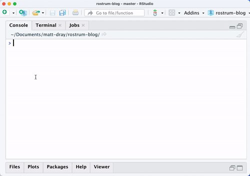

## remotes::install_github("matt-dray/emojiscape")
library(emojiscape)
tl;dr
You can print a little emoji scene to your R console with the {emojiscape} package.
Really?
Regular readers will know that this blog is where I implement whimsical R daydreams. Today is no exception: I’ve made a tiny package to print a little randomised emoji scene to my console.
Why? I’ve seen people make cute emoji-based bots, which I’ve been interested in after making the @londonmapbot Twitter bot (post, source, BotWiki). I also enjoyed the fun of mild randomisation in my last post about #RecreationThursday.
I’ve made this completely for my own amusement, so no guarantees whatsoever.
Play god
Install
You can install {emojiscape} from GitHub.
The package has one dependency: the GitHub-hosted {emo} package1 by Hadley Wickham. It implements emoji in R like emo::ji("sauropod") 🦕.
There’s no guarantee that these particular emoji will display correctly on your device and they may have different designs if you’re using another operating system.
Generate
Let’s generate() a scene.
The first one is nuts, lol: a classic deciduous woods.2
generate("woods")🌳 🐿 🌰 🌰 🌳 🐿 🌰 🌳 🐿 🌰
🌳 🐿 🌳 🌳 🌰 🌳 🌳 🌰 🌰 🌳
🌳 🌰 🌳 🌳 🌳 🌳 🌰 🌳 🌳 🌳
🌳 🌳 🌳 🌳 🌳 🌳 🌰 🌳 🌳 🌳
🌳 🐿 🌳 🌰 🌳 🌰 🌳 🌳 🌳 🌳
🌳 🌳 🐿 🌳 🌳 🌳 🌳 🌳 🌰 🌳
🌰 🐿 🌰 🐿 🌳 🌳 🐿 🌳 🌳 🌳
🌳 🌰 🌰 🌳 🌳 🌳 🌳 🌳 🌳 🌳
🌳 🌳 🌳 🌳 🌳 🌳 🌳 🌳 🌳 🌳
🌳 🌳 🐿 🌳 🌳 🌳 🌳 🌳 🌰 🐿 Hold your breath, we’re going to space. You can resize the output, but space is basically infinite and my console is not.
generate(
terrain = "space",
grid_size = 7 # i.e. a 7x7 grid
)⬛ ⬛ ⬛ ⬛ ⬛ ⬛ ⬛
⭐ ⬛ ⬛ ⬛ ⭐ ⬛ ⬛
⭐ ⭐ ⬛ ⭐ ⬛ ⬛ ⬛
⬛ ⬛ ⭐ ⬛ ⭐ ⬛ ⬛
⬛ ⬛ ⬛ ⬛ ⬛ ⬛ ⬛
⬛ ⬛ ⬛ ⭐ 🛰 ⬛ ⬛
⬛ ⬛ ⭐ ⭐ ⬛ ⬛ ⭐ Here’s a little raccoon city. Perhaps the residents are evil. (That is a gamer joke, gg.)
generate("city", 5)🏬 🏢 🏢 🏢 🏢
🏢 🏬 🏬 🏢 🏢
🏢 🏢 🏬 🏢 🏢
🏢 🏢 🏢 🏬 🏢
🏢 🏢 🦝 🏢 🏢 I have a PhD in dead leaves, so I had to add undergrowth. Ant you glad I included it?
generate("undergrowth", 5)🍂 🐜 🍂 🐜 🍂
🐜 🍄 🍂 🍂 🍂
🍂 🍂 🍂 🍂 🍂
🍂 🍂 🐜 🍂 🐜
🍂 🍂 🍂 🍂 🍂 Here endeth the puns.
Terrains
So what are all the available terrain options?
paste(as.list(args(generate))$terrain)[-1] [1] "arable" "city" "desert" "forest" "garden"
[6] "liminal" "mountains" "ocean" "pastoral" "polar"
[11] "rainforest" "sky" "space" "suburbs" "traffic"
[16] "undergrowth" "woods" This list may go out of date if more options are added in future.
Expand the sections below to see each terrain’s emoji set and previews of the output for each one.
Click for all emoji sets
terrain = "arable"
terrain name emoji freq
1 arable ear_of_corn 🌽 common
2 arable tractor 🚜 uncommon
3 arable mouse 🐭 rare
terrain = "city"
terrain name emoji freq
1 city office_building 🏢 common
2 city department_store 🏬 uncommon
3 city raccoon 🦝 rare
terrain = "desert"
terrain name emoji freq
1 desert desert 🏜 common
2 desert cactus 🌵 uncommon
3 desert camel 🐫 rare
terrain = "forest"
terrain name emoji freq
1 forest evergreen_tree 🌲 common
2 forest squirrel 🐿 uncommon
3 forest christmas_tree 🎄 rare
terrain = "garden"
terrain name emoji freq
1 garden rose 🌹 common
2 garden seedling 🌱 uncommon
3 garden wilted_flower 🥀 rare
terrain = "liminal"
terrain name emoji freq
1 liminal white_large_square ⬜ common
2 liminal door 🚪 uncommon
3 liminal light_bulb 💡 rare
terrain = "mountains"
terrain name emoji freq
1 mountains mountain ⛰ common
2 mountains snow_capped_mountain 🏔️ uncommon
3 mountains goat 🐐 rare
terrain = "ocean"
terrain name emoji freq
1 ocean water_wave 🌊 common
2 ocean desert_island 🏝 uncommon
3 ocean dolphin 🐬 rare
terrain = "pastoral"
terrain name emoji freq
1 pastoral rooster 🐓 common
2 pastoral egg 🥚 uncommon
3 pastoral hatching_chick 🐣 rare
terrain = "polar"
terrain name emoji freq
1 polar cloud_with_snow 🌨 common
2 polar snowflake ❄️ uncommon
3 polar penguin 🐧 rare
terrain = "rainforest"
terrain name emoji freq
1 rainforest deciduous_tree 🌳 common
2 rainforest snake 🐍 uncommon
3 rainforest gorilla 🦍 rare
terrain = "sky"
terrain name emoji freq
1 sky cloud_with_rain 🌧 common
2 sky rainbow 🌈 uncommon
3 sky airplane ✈️ rare
terrain = "space"
terrain name emoji freq
1 space black_large_square ⬛ common
2 space star ⭐ uncommon
3 space orbit 🛰 rare
terrain = "suburbs"
terrain name emoji freq
1 suburbs deciduous_tree 🌳 common
2 suburbs house_with_garden 🏡 uncommon
3 suburbs person_biking 🚴 rare
terrain = "traffic"
terrain name emoji freq
1 traffic automobile 🚗 common
2 traffic taxi 🚕 uncommon
3 traffic truck 🚚 rare
terrain = "undergrowth"
terrain name emoji freq
1 undergrowth fallen_leaf 🍂 common
2 undergrowth ant 🐜 uncommon
3 undergrowth mushroom 🍄 rare
terrain = "woods"
terrain name emoji freq
1 woods deciduous_tree 🌳 common
2 woods chestnut 🌰 uncommon
3 woods chipmunk 🐿 rareClick for all previews
terrain = "arable"
🌽 🌽 🌽 🌽 🌽 🌽 🌽 🚜 🌽 🌽
🌽 🌽 🌽 🌽 🌽 🚜 🚜 🌽 🌽 🌽
🚜 🌽 🌽 🌽 🌽 🌽 🌽 🚜 🌽 🚜
🌽 🐭 🌽 🌽 🌽 🌽 🐭 🌽 🚜 🌽
🌽 🌽 🚜 🌽 🌽 🌽 🌽 🐭 🌽 🌽
🌽 🌽 🚜 🌽 🚜 🌽 🚜 🌽 🌽 🚜
🌽 🌽 🌽 🚜 🌽 🌽 🐭 🌽 🌽 🐭
🚜 🌽 🌽 🌽 🌽 🌽 🌽 🌽 🌽 🌽
🌽 🌽 🌽 🌽 🚜 🌽 🌽 🌽 🌽 🌽
🌽 🐭 🌽 🚜 🌽 🌽 🌽 🌽 🌽 🌽
terrain = "city"
🏢 🏢 🏢 🏢 🏢 🏢 🏢 🏬 🏢 🏢
🏢 🏢 🏢 🏢 🏢 🏢 🏢 🏢 🏢 🏢
🏢 🏢 🏢 🏢 🏬 🏬 🏢 🏢 🏢 🏢
🏢 🏢 🏢 🏢 🏢 🏢 🏬 🏢 🏬 🏢
🏢 🏢 🏬 🏢 🏢 🏢 🏢 🏢 🦝 🏢
🏢 🏢 🦝 🏬 🏢 🦝 🏢 🏬 🏢 🏢
🏬 🏢 🏢 🏬 🏢 🏬 🏢 🏢 🏢 🦝
🏢 🏢 🏢 🏬 🏢 🏢 🏬 🏬 🏢 🏢
🏢 🏢 🏢 🏬 🏢 🏢 🏢 🏢 🦝 🏬
🏢 🏬 🏬 🏢 🏢 🏢 🏢 🏢 🏢 🏢
terrain = "desert"
🏜 🏜 🏜 🏜 🏜 🌵 🏜 🏜 🏜 🌵
🏜 🏜 🏜 🏜 🏜 🏜 🌵 🏜 🏜 🏜
🏜 🏜 🏜 🏜 🏜 🏜 🏜 🏜 🌵 🏜
🏜 🌵 🏜 🏜 🌵 🏜 🏜 🏜 🌵 🏜
🏜 🏜 🏜 🏜 🏜 🏜 🌵 🐫 🏜 🏜
🌵 🏜 🏜 🏜 🏜 🏜 🏜 🏜 🌵 🏜
🏜 🏜 🏜 🏜 🏜 🌵 🏜 🏜 🏜 🏜
🏜 🏜 🏜 🏜 🏜 🏜 🏜 🏜 🏜 🏜
🏜 🏜 🏜 🐫 🏜 🌵 🌵 🏜 🌵 🏜
🏜 🏜 🏜 🐫 🐫 🏜 🏜 🌵 🌵 🐫
terrain = "forest"
🌲 🌲 🌲 🐿 🌲 🌲 🌲 🌲 🎄 🌲
🌲 🌲 🌲 🌲 🌲 🌲 🐿 🌲 🌲 🌲
🌲 🌲 🌲 🌲 🌲 🌲 🌲 🌲 🌲 🌲
🌲 🌲 🐿 🌲 🌲 🌲 🐿 🌲 🌲 🌲
🐿 🌲 🌲 🌲 🎄 🌲 🐿 🌲 🌲 🎄
🌲 🌲 🌲 🌲 🐿 🌲 🌲 🎄 🌲 🌲
🐿 🌲 🐿 🌲 🎄 🌲 🐿 🌲 🐿 🌲
🌲 🌲 🌲 🌲 🌲 🌲 🌲 🌲 🌲 🐿
🌲 🌲 🌲 🌲 🌲 🌲 🌲 🌲 🌲 🌲
🌲 🌲 🌲 🌲 🌲 🌲 🌲 🌲 🐿 🌲
terrain = "garden"
🌱 🌹 🌹 🌹 🌱 🌹 🌹 🌹 🌹 🌱
🌹 🌹 🌹 🌹 🌱 🌹 🌹 🌱 🥀 🌹
🌹 🌱 🌹 🌹 🌹 🌹 🌹 🌹 🥀 🌱
🥀 🌱 🌹 🌱 🌹 🌹 🌹 🌹 🌹 🌹
🌱 🥀 🌹 🌹 🌹 🥀 🌹 🌹 🌱 🌹
🌹 🌹 🌱 🌹 🌹 🌹 🥀 🌹 🌹 🌹
🌱 🌱 🌹 🌹 🌹 🌹 🌹 🌱 🌹 🌹
🌹 🌹 🌱 🌹 🌹 🌹 🌹 🌹 🌱 🌹
🌹 🌹 🌹 🌱 🌹 🌹 🌹 🌹 🌹 🌹
🌱 🌹 🌱 🌹 🌹 🌹 🌹 🌹 🌹 🌱
terrain = "liminal"
⬜ ⬜ ⬜ ⬜ ⬜ 🚪 ⬜ ⬜ ⬜ 🚪
⬜ ⬜ ⬜ ⬜ ⬜ ⬜ 🚪 ⬜ ⬜ ⬜
⬜ ⬜ ⬜ ⬜ ⬜ ⬜ ⬜ ⬜ 🚪 ⬜
⬜ ⬜ ⬜ ⬜ 🚪 ⬜ ⬜ ⬜ ⬜ ⬜
⬜ 🚪 ⬜ ⬜ 🚪 🚪 ⬜ 🚪 ⬜ ⬜
⬜ 🚪 ⬜ ⬜ 💡 ⬜ ⬜ 🚪 ⬜ ⬜
⬜ 🚪 🚪 🚪 ⬜ ⬜ ⬜ ⬜ ⬜ ⬜
⬜ ⬜ ⬜ ⬜ ⬜ ⬜ ⬜ 🚪 ⬜ ⬜
⬜ ⬜ 🚪 ⬜ 🚪 ⬜ 🚪 ⬜ ⬜ ⬜
⬜ 🚪 🚪 ⬜ 🚪 ⬜ ⬜ ⬜ ⬜ ⬜
terrain = "mountains"
⛰ ⛰ ⛰ 🐐 ⛰ ⛰ 🏔️ ⛰ ⛰ ⛰
⛰ ⛰ ⛰ 🏔️ ⛰ ⛰ 🏔️ ⛰ ⛰ ⛰
⛰ 🏔️ ⛰ ⛰ 🏔️ ⛰ ⛰ ⛰ ⛰ ⛰
⛰ ⛰ ⛰ ⛰ ⛰ ⛰ ⛰ ⛰ 🏔️ ⛰
⛰ ⛰ ⛰ ⛰ ⛰ ⛰ 🐐 ⛰ ⛰ 🐐
⛰ 🐐 🏔️ ⛰ ⛰ ⛰ ⛰ ⛰ 🏔️ 🏔️
⛰ ⛰ ⛰ 🏔️ 🐐 ⛰ 🏔️ 🏔️ ⛰ ⛰
⛰ 🏔️ 🐐 ⛰ ⛰ ⛰ ⛰ ⛰ ⛰ ⛰
🏔️ ⛰ ⛰ ⛰ ⛰ 🏔️ 🏔️ ⛰ 🏔️ 🐐
🐐 🏔️ ⛰ ⛰ ⛰ ⛰ ⛰ 🏔️ ⛰ 🏔️
terrain = "ocean"
🐬 🌊 🏝 🏝 🌊 🌊 🌊 🌊 🌊 🌊
🐬 🌊 🌊 🌊 🌊 🌊 🐬 🌊 🌊 🌊
🌊 🌊 🌊 🌊 🌊 🌊 🏝 🏝 🌊 🌊
🌊 🏝 🌊 🌊 🌊 🌊 🌊 🌊 🐬 🌊
🌊 🌊 🌊 🏝 🌊 🌊 🌊 🌊 🌊 🌊
🌊 🌊 🐬 🌊 🐬 🌊 🌊 🌊 🏝 🌊
🌊 🏝 🏝 🌊 🌊 🏝 🌊 🌊 🌊 🌊
🌊 🌊 🏝 🌊 🌊 🌊 🌊 🐬 🌊 🌊
🏝 🌊 🌊 🏝 🌊 🐬 🌊 🌊 🏝 🌊
🌊 🌊 🌊 🌊 🏝 🌊 🌊 🏝 🏝 🌊
terrain = "pastoral"
🐓 🥚 🥚 🥚 🐓 🐓 🐓 🐓 🐓 🐓
🐓 🐓 🐓 🐓 🐣 🐓 🥚 🐓 🐓 🐣
🐓 🐓 🐓 🐓 🐓 🐓 🐓 🐓 🐣 🐓
🐓 🐓 🥚 🐓 🐓 🐓 🐓 🐓 🐓 🐣
🐓 🐣 🐓 🐓 🐓 🐓 🐓 🐓 🐓 🐓
🥚 🐓 🥚 🐓 🐓 🐓 🐓 🐓 🐣 🐣
🐓 🐓 🐓 🐓 🐓 🥚 🥚 🐓 🐣 🐓
🐓 🐓 🐓 🥚 🐓 🐓 🐓 🐓 🐓 🐓
🥚 🐓 🐓 🐓 🥚 🥚 🥚 🐓 🐓 🐓
🥚 🐓 🥚 🥚 🥚 🐣 🐓 🥚 🐓 🥚
terrain = "polar"
🌨 ❄️ ❄️ 🌨 ❄️ 🌨 🌨 🌨 ❄️ 🌨
🌨 🌨 🌨 🌨 🌨 🌨 ❄️ 🌨 🌨 🌨
🌨 🌨 🐧 🌨 ❄️ 🐧 🌨 ❄️ ❄️ 🌨
❄️ 🌨 🌨 🌨 🌨 🌨 ❄️ 🌨 ❄️ 🌨
🌨 🌨 ❄️ 🐧 ❄️ ❄️ ❄️ 🌨 🌨 ❄️
🌨 🌨 🌨 🌨 🌨 ❄️ 🌨 🌨 🌨 ❄️
🌨 ❄️ 🌨 🌨 🌨 ❄️ 🌨 🌨 🌨 🌨
🌨 🌨 🐧 ❄️ 🌨 ❄️ 🌨 🌨 ❄️ 🌨
🌨 🌨 🌨 🌨 ❄️ 🌨 🌨 🌨 🌨 🌨
🌨 ❄️ 🌨 🌨 🌨 🌨 🌨 🐧 ❄️ 🌨
terrain = "rainforest"
🌳 🌳 🌳 🌳 🌳 🌳 🦍 🌳 🌳 🌳
🌳 🐍 🐍 🐍 🌳 🦍 🌳 🌳 🌳 🌳
🌳 🌳 🌳 🌳 🦍 🌳 🦍 🌳 🌳 🐍
🌳 🌳 🌳 🌳 🌳 🌳 🌳 🐍 🌳 🌳
🌳 🌳 🐍 🦍 🌳 🌳 🌳 🐍 🌳 🐍
🌳 🌳 🐍 🌳 🐍 🌳 🐍 🌳 🌳 🌳
🌳 🌳 🌳 🌳 🐍 🌳 🌳 🌳 🌳 🌳
🐍 🌳 🌳 🌳 🦍 🌳 🌳 🌳 🌳 🌳
🌳 🌳 🦍 🌳 🌳 🌳 🌳 🐍 🌳 🐍
🐍 🌳 🌳 🐍 🌳 🌳 🐍 🌳 🌳 🌳
terrain = "sky"
🌧 🌧 🌧 🌧 🌧 🌧 🌧 🌧 🌈 🌈
🌧 🌧 🌧 🌧 🌧 🌈 🌧 🌧 🌈 🌧
🌧 🌧 🌈 🌧 ✈️ 🌧 🌧 🌧 🌧 ✈️
🌧 🌧 🌧 ✈️ 🌧 🌧 🌧 🌧 🌧 🌈
🌧 🌧 🌧 🌧 🌈 🌧 🌧 🌧 🌧 🌧
🌈 🌧 🌧 🌧 🌧 🌧 🌧 🌈 🌧 🌧
🌧 🌈 🌧 🌧 🌧 🌧 🌧 🌧 🌧 🌧
🌧 🌧 🌧 🌧 🌈 🌧 🌧 ✈️ 🌈 🌈
✈️ 🌧 🌧 🌧 🌧 🌧 🌧 🌧 🌈 🌈
🌈 🌧 🌧 🌧 🌧 🌧 🌈 🌧 🌈 🌧
terrain = "space"
⬛ ⬛ ⬛ ⬛ ⬛ ⬛ ⬛ ⬛ ⬛ ⭐
⬛ ⬛ ⭐ ⬛ ⬛ ⬛ ⬛ ⭐ ⬛ ⬛
⬛ ⬛ ⬛ ⭐ ⭐ ⬛ ⭐ ⭐ ⬛ ⬛
⭐ ⬛ ⬛ ⭐ ⬛ 🛰 ⬛ 🛰 ⬛ ⭐
⬛ ⬛ ⬛ 🛰 ⭐ ⬛ ⬛ 🛰 ⬛ ⭐
⭐ ⬛ ⭐ ⬛ ⬛ ⬛ ⬛ ⬛ ⭐ ⬛
⬛ ⬛ ⭐ ⬛ ⬛ ⬛ ⬛ ⬛ ⬛ ⭐
⭐ ⭐ ⬛ ⬛ ⭐ ⬛ ⬛ ⬛ ⭐ ⬛
⬛ ⬛ ⬛ ⬛ ⭐ ⬛ ⬛ ⬛ ⭐ ⭐
⭐ ⬛ ⭐ ⬛ 🛰 ⬛ ⬛ ⬛ ⬛ ⬛
terrain = "suburbs"
🌳 🌳 🏡 🌳 🌳 🌳 🌳 🌳 🌳 🌳
🌳 🏡 🌳 🌳 🏡 🌳 🏡 🌳 🚴 🏡
🌳 🌳 🏡 🌳 🌳 🏡 🌳 🌳 🌳 🌳
🌳 🌳 🌳 🌳 🏡 🌳 🌳 🚴 🌳 🌳
🌳 🌳 🏡 🏡 🌳 🏡 🌳 🏡 🌳 🌳
🌳 🌳 🏡 🌳 🌳 🏡 🌳 🏡 🌳 🏡
🌳 🏡 🌳 🏡 🌳 🌳 🏡 🏡 🌳 🏡
🌳 🌳 🌳 🌳 🌳 🚴 🏡 🌳 🏡 🌳
🌳 🌳 🌳 🚴 🌳 🌳 🌳 🏡 🌳 🌳
🌳 🏡 🌳 🏡 🌳 🌳 🏡 🏡 🌳 🌳
terrain = "traffic"
🚗 🚗 🚗 🚗 🚕 🚗 🚗 🚕 🚗 🚕
🚗 🚗 🚗 🚗 🚕 🚗 🚗 🚚 🚗 🚗
🚗 🚕 🚗 🚗 🚗 🚗 🚗 🚗 🚗 🚗
🚗 🚗 🚚 🚗 🚗 🚗 🚗 🚗 🚕 🚗
🚗 🚗 🚗 🚗 🚕 🚗 🚗 🚗 🚗 🚗
🚗 🚗 🚚 🚗 🚗 🚗 🚕 🚗 🚕 🚗
🚕 🚗 🚕 🚗 🚗 🚗 🚗 🚕 🚗 🚕
🚕 🚕 🚕 🚕 🚗 🚗 🚕 🚗 🚗 🚗
🚕 🚕 🚗 🚗 🚚 🚗 🚗 🚗 🚕 🚗
🚗 🚗 🚗 🚗 🚗 🚗 🚗 🚗 🚗 🚚
terrain = "undergrowth"
🍂 🐜 🐜 🐜 🍂 🍂 🐜 🍂 🍂 🍂
🍂 🍂 🍂 🍂 🍂 🐜 🍂 🍂 🍂 🍂
🍂 🐜 🍂 🍂 🍂 🐜 🍂 🍂 🍂 🐜
🍂 🐜 🐜 🍂 🍂 🍂 🐜 🍂 🍂 🍂
🍂 🍂 🍂 🍂 🍂 🍂 🍂 🐜 🍂 🍂
🍂 🍂 🍂 🍂 🍂 🐜 🍂 🐜 🍄 🍂
🍂 🍄 🍂 🍂 🍂 🍂 🐜 🍂 🍂 🍂
🍂 🍂 🐜 🍂 🐜 🍂 🍂 🍂 🍂 🍂
🍂 🍂 🍂 🐜 🍄 🍂 🍂 🍂 🍂 🐜
🐜 🍂 🍂 🍂 🍂 🍂 🍂 🍂 🍂 🍂
terrain = "woods"
🌳 🌳 🌳 🌰 🌰 🌳 🌳 🌳 🌳 🌳
🌳 🌰 🌳 🌰 🌳 🌰 🌳 🌳 🌳 🌳
🌳 🌰 🌰 🌳 🌳 🐿 🌳 🌳 🐿 🌳
🌰 🌳 🌳 🌳 🌳 🌰 🌳 🌳 🌰 🌳
🌰 🌳 🌰 🌳 🌳 🌳 🌳 🌳 🌳 🌰
🌳 🌳 🌳 🌳 🌳 🌳 🌳 🌰 🌳 🌳
🌳 🌳 🌳 🌳 🌳 🌳 🐿 🌰 🌳 🌳
🌳 🌳 🌰 🌰 🌰 🌳 🌰 🌳 🌳 🌰
🌳 🌳 🌰 🌰 🌳 🌳 🌳 🌳 🌳 🌰
🌳 🌳 🌳 🌳 🌳 🌳 🌳 🌳 🌳 🌳 Frequencies
Use get_set() to see each terrain’s emoji set and their ‘suggested frequency’ slot. In general, the most common emoji is the one that defines the background or vegetation and the rarer ones are creatures or whatever.
get_set("mountains") terrain name emoji freq
1 mountains mountain ⛰ common
2 mountains snow_capped_mountain 🏔️ uncommon
3 mountains goat 🐐 rareBut you can totally mess with these emoji sampling probabilities in generate().
Any The Mountain Goats fans?
generate(
terrain = "mountains",
prob_common = 0.1,
prob_uncommon = 0.2,
prob_rare = 0.7 # INCREASE GOAT FREQUENCY
)🐐 🏔️ 🐐 ⛰ 🐐 🐐 🐐 🏔️ 🐐 🐐
🏔️ 🐐 ⛰ 🐐 🐐 🐐 🐐 🏔️ 🐐 🐐
🐐 🐐 🏔️ 🐐 🐐 🐐 ⛰ 🐐 🐐 🐐
🐐 🐐 🐐 🐐 ⛰ 🐐 🐐 🏔️ 🐐 🐐
🐐 🐐 🐐 🐐 🏔️ 🐐 🐐 🐐 ⛰ 🐐
🐐 🐐 🐐 🐐 🏔️ 🐐 🏔️ 🐐 🐐 🐐
🏔️ 🐐 ⛰ 🏔️ 🐐 🐐 ⛰ 🐐 ⛰ 🐐
🐐 🐐 🐐 ⛰ 🐐 ⛰ 🐐 🏔️ 🐐 🏔️
🏔️ 🐐 🐐 🐐 🐐 🐐 🏔️ 🏔️ 🏔️ 🏔️
🏔️ 🏔️ ⛰ 🐐 🐐 🏔️ 🐐 🐐 🏔️ 🐐 Approach
The generate() function is pretty simple. What it does is:
- Creates a vector of emojis with a length of
grid_size()squared, sampled from the specifiedterrainset with frequencies from theprob_*arguments - Coerces this vector to a matrix of length and width
grid_size()(i.e. a square) - Loops over each row of the matrix with
cat()to print the output to the console
It works.
Expansion
If you really want, you can add a terrain option by raising a new issue or pull request in the {emojiscape} GitHub repo. These are specified in the .get_emoji() function in the /R/utils.R script.
Environment
Session info
Last rendered: 2023-07-17 18:35:09 BSTR version 4.3.1 (2023-06-16)
Platform: aarch64-apple-darwin20 (64-bit)
Running under: macOS Ventura 13.2.1
Matrix products: default
BLAS: /Library/Frameworks/R.framework/Versions/4.3-arm64/Resources/lib/libRblas.0.dylib
LAPACK: /Library/Frameworks/R.framework/Versions/4.3-arm64/Resources/lib/libRlapack.dylib; LAPACK version 3.11.0
locale:
[1] en_US.UTF-8/en_US.UTF-8/en_US.UTF-8/C/en_US.UTF-8/en_US.UTF-8
time zone: Europe/London
tzcode source: internal
attached base packages:
[1] stats graphics grDevices utils datasets methods base
other attached packages:
[1] emojiscape_0.0.0.9000
loaded via a namespace (and not attached):
[1] digest_0.6.31 assertthat_0.2.1 lubridate_1.9.2 fastmap_1.1.1
[5] xfun_0.39 magrittr_2.0.3 glue_1.6.2 stringr_1.5.0
[9] knitr_1.43.1 htmltools_0.5.5 timechange_0.2.0 generics_0.1.3
[13] rmarkdown_2.23 lifecycle_1.0.3 cli_3.6.1 vctrs_0.6.3
[17] compiler_4.3.1 purrr_1.0.1 emo_0.0.0.9000 rstudioapi_0.15.0
[21] tools_4.3.1 evaluate_0.21 yaml_2.3.7 crayon_1.5.2
[25] rlang_1.1.1 jsonlite_1.8.7 htmlwidgets_1.6.2 stringi_1.7.12 Footnotes
Reuse
CC BY-NC-SA 4.0